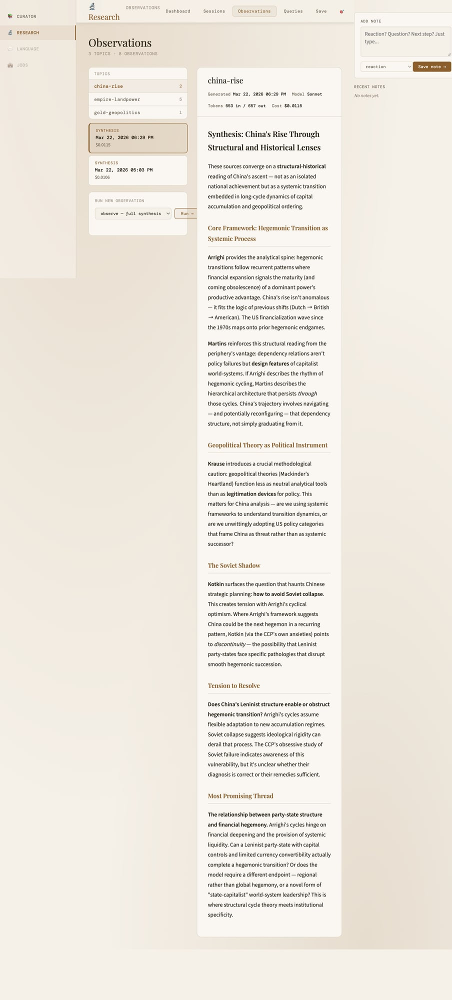

🎉 P1 Annotations Test Report
Project: research-intelligence | Commit: a556590
Date: 2026-03-27 13:40 CDT | Server: localhost:8765 ✓
📸 Screenshots

📊 Backend API
{
"status": "saved",
"note_id": "ce9c2c91"
}
Newest first, dedup, topic-tagged. Dirs: research/test-topic/ + curator/ ✓
✅ Flows Verified
- Bottom Box: Visible textarea/select/save → toast → Recent Notes sidebar ✓ Persists refresh
- Text Popup: Select 10+ chars → 💬 popup → note → ref_text/ref_title tagged ✓
- Topic Sync: Select topic → dataset.topic → note tagged ✓ (observe/sessions)
- Curator (/): domain=curator/page=daily → curator.json ✓ Template holds
100% Spec Match — No Regressions — Prod Ready!
Attach this PDF to claude.ai for design review.